DFU Thermography Screening Station · prototype model, November 16, 2026
Research prototype, not a diagnosis. The model outputs a class with a confidence. It never
assigns a Wagner grade. The grades on this page are the ones the dataset's own experts gave, shown only to check the
model.
What was tested
MobileNetV2 (ImageNet weights, last layer trained) on the Raspberry Pi RGB and thermal dataset of Mermer, Aksu et
al., grades 0 to 2. The pictures were split by patient group (capture session) into 5 folds. This page shows fold
0: the model was trained on 32 groups (644 pictures) and tested on
8 other groups (106 pictures) it had never seen. The 10 samples below come from those
unseen test groups.
106unseen test pictures
54 %matched the dataset grade
5 of 10samples below matched
8unseen patient groups
All 106 test pictures of this fold
Rows: dataset grade Columns: model output
class_0 (grade 0 pictures)
class_1 (grade 1 pictures)
class_2 (grade 2 pictures)
Matched
Dataset grade 0
0
11
5
0 of 16 (0 %)
Dataset grade 1
4
15
3
15 of 22 (68 %)
Dataset grade 2
8
18
42
42 of 68 (62 %)
The highlighted cells are matches. Read each row: of the pictures with that grade, how many the model put in each
class.
Accuracy and precision
Precision
Recall
F1
Test pictures
Grade 0
0 %
0 %
0 %
16
Grade 1
34 %
68 %
45 %
22
Grade 2
84 %
62 %
71 %
68
Accuracy (54 %): of all test pictures, the share the model matched.
Precision: when the model says "this looks like grade X", how often it is right.
Recall: of all the grade X pictures, how many the model found.
F1: precision and recall combined into one number (both must be high for F1 to be high).
The 10 samples
Sample 1 Does not match
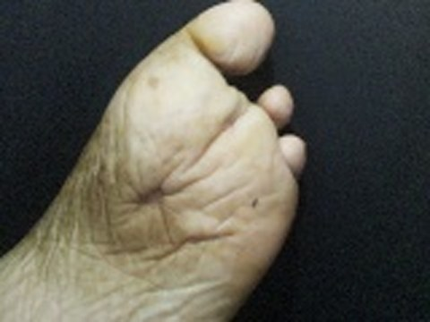
RGB (Pi Camera)
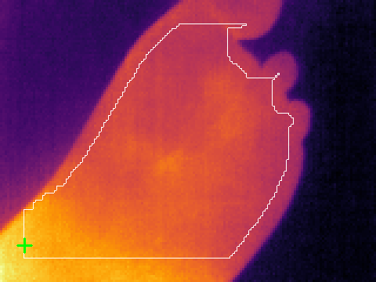
Thermal (Lepton 3.5): white outline = area of the sole measured, green + = warmest spot (5 × 5 pixel average)
Grade given by the dataset's experts
Grade 1
Model output
class_2 (the class trained on grade 2 pictures), confidence 65 %
Sole average temperature
37.6 °C
Warm spot
none inside the sole (warmest at the picture edge, where the foot continues out of view)
class_01 %
class_134 %
class_265 %
Reading: The model put this grade 1 foot with its grade 2 pictures. The foot gets warmer toward the edge of the picture, where it continues out of view; there is no separate hot spot inside the sole.
File 2024-05-17_03-09-14pic_cam.jpg · test group public_v1-g00033
Sample 2 Matches the dataset grade
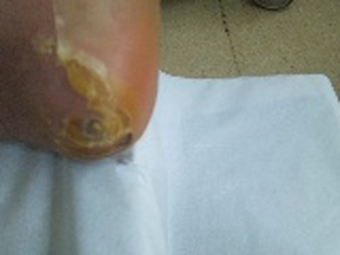
RGB (Pi Camera)
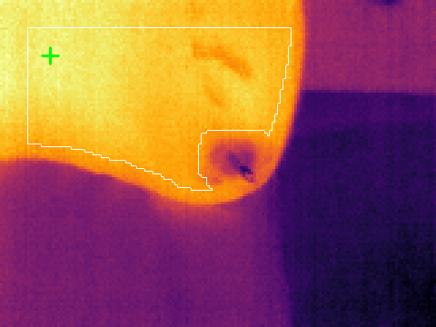
Thermal (Lepton 3.5): white outline = area of the sole measured, green + = warmest spot (5 × 5 pixel average)
Grade given by the dataset's experts
Grade 2
Model output
class_2 (the class trained on grade 2 pictures), confidence 97 %
Sole average temperature
35.6 °C
Warm spot
0.6 °C above the sole average (36.2 °C)
class_02 %
class_11 %
class_297 %
Reading: The model matched the dataset grade (2) and was sure. The sole is evenly warm, with no distinct hot area.
File 2024-06-07_23-18-39pic_cam.jpg · test group public_v1-g00183
Sample 3 Does not match
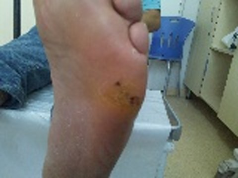
RGB (Pi Camera)
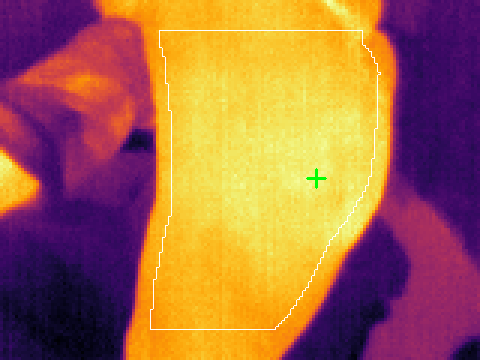
Thermal (Lepton 3.5): white outline = area of the sole measured, green + = warmest spot (5 × 5 pixel average)
Grade given by the dataset's experts
Grade 1
Model output
class_0 (the class trained on grade 0 pictures), confidence 51 %
Sole average temperature
37.2 °C
Warm spot
0.6 °C above the sole average (37.7 °C)
class_051 %
class_125 %
class_223 %
Reading: The model put this grade 1 foot with its grade 0 pictures, but it was unsure (close to a guess). The sole is evenly warm, with no distinct hot area.
File 2024-07-25_07-46-08pic_cam.jpg · test group public_v1-g00060
Sample 4 Does not match
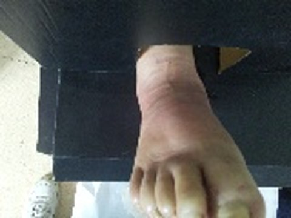
RGB (Pi Camera)
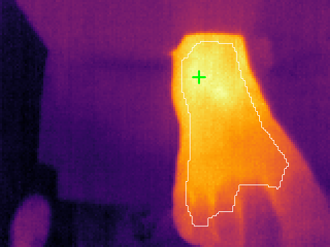
Thermal (Lepton 3.5): white outline = area of the sole measured, green + = warmest spot (5 × 5 pixel average)
Grade given by the dataset's experts
Grade 0
Model output
class_1 (the class trained on grade 1 pictures), confidence 98 %
Sole average temperature
32.1 °C
Warm spot
1.4 °C above the sole average (33.5 °C)
class_01 %
class_198 %
class_22 %
Reading: The model put this grade 0 foot with its grade 1 pictures and was sure. The sole has a mild warm area, 1.4 °C above its average.
File 2024-07-25_10-18-12pic_cam.jpg · test group public_v1-g00009
Sample 5 Matches the dataset grade
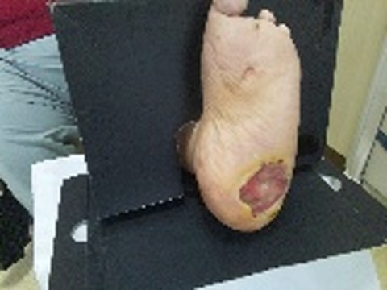
RGB (Pi Camera)
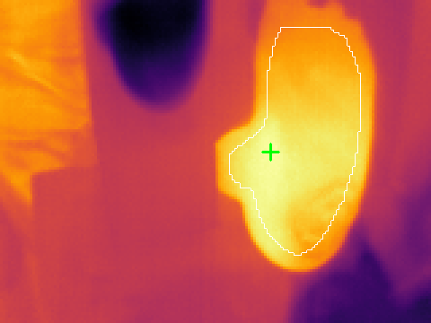
Thermal (Lepton 3.5): white outline = area of the sole measured, green + = warmest spot (5 × 5 pixel average)
Grade given by the dataset's experts
Grade 2
Model output
class_2 (the class trained on grade 2 pictures), confidence 95 %
Sole average temperature
40.0 °C
Warm spot
2.0 °C above the sole average (42.0 °C)
class_00 %
class_15 %
class_295 %
Reading: The model matched the dataset grade (2) and was sure. The sole has a distinct warm area, 2.0 °C above its average.
File 2024-07-25_21-18-53pic_cam.jpg · test group public_v1-g00335
Sample 6 Matches the dataset grade
RGB (Pi Camera)
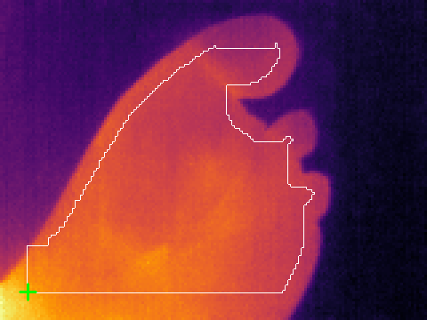
Thermal (Lepton 3.5): white outline = area of the sole measured, green + = warmest spot (5 × 5 pixel average)
Grade given by the dataset's experts
Grade 1
Model output
class_1 (the class trained on grade 1 pictures), confidence 98 %
Sole average temperature
37.0 °C
Warm spot
none inside the sole (warmest at the picture edge, where the foot continues out of view)
class_00 %
class_198 %
class_21 %
Reading: The model matched the dataset grade (1) and was sure. The foot gets warmer toward the edge of the picture, where it continues out of view; there is no separate hot spot inside the sole.
File 2024-05-17_03-09-23pic_cam.jpg · test group public_v1-g00033
Sample 7 Does not match
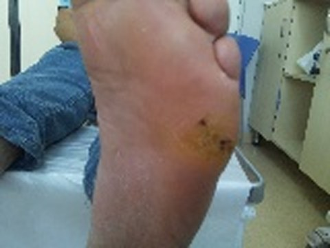
RGB (Pi Camera)
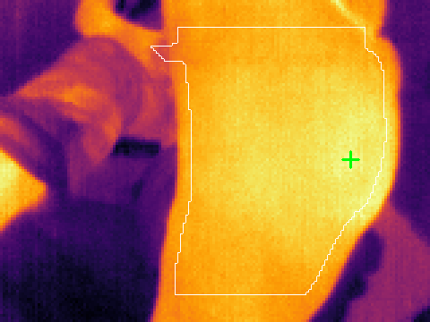
Thermal (Lepton 3.5): white outline = area of the sole measured, green + = warmest spot (5 × 5 pixel average)
Grade given by the dataset's experts
Grade 1
Model output
class_0 (the class trained on grade 0 pictures), confidence 80 %
Sole average temperature
37.2 °C
Warm spot
0.8 °C above the sole average (37.9 °C)
class_080 %
class_112 %
class_28 %
Reading: The model put this grade 1 foot with its grade 0 pictures. The sole is evenly warm, with no distinct hot area.
File 2024-07-25_07-46-14pic_cam.jpg · test group public_v1-g00060
Sample 8 Matches the dataset grade
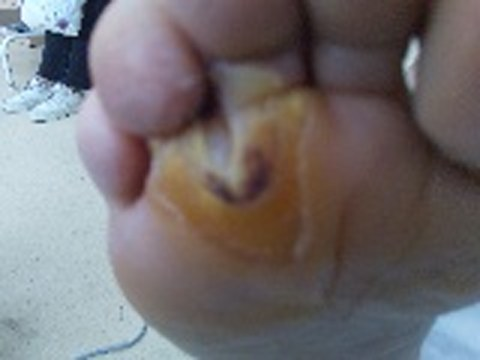
RGB (Pi Camera)
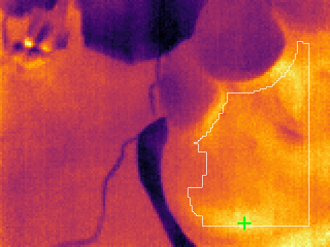
Thermal (Lepton 3.5): white outline = area of the sole measured, green + = warmest spot (5 × 5 pixel average)
Grade given by the dataset's experts
Grade 2
Model output
class_2 (the class trained on grade 2 pictures), confidence 40 %
Sole average temperature
34.3 °C
Warm spot
none inside the sole (warmest at the picture edge, where the foot continues out of view)
class_024 %
class_136 %
class_240 %
Reading: The model matched the dataset grade (2), but it was unsure (close to a guess). The foot gets warmer toward the edge of the picture, where it continues out of view; there is no separate hot spot inside the sole.
File 2024-06-07_23-18-40pic_cam.jpg · test group public_v1-g00183
Sample 9 Does not match
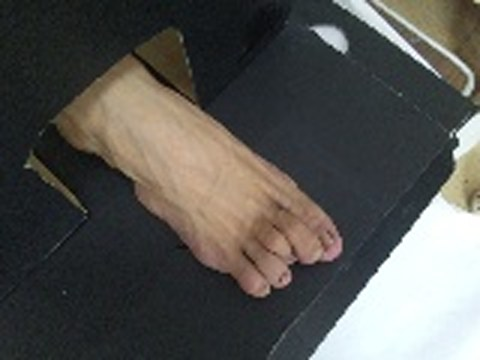
RGB (Pi Camera)
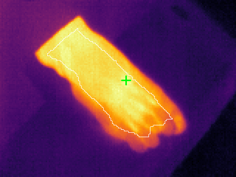
Thermal (Lepton 3.5): white outline = area of the sole measured, green + = warmest spot (5 × 5 pixel average)
Grade given by the dataset's experts
Grade 0
Model output
class_1 (the class trained on grade 1 pictures), confidence 75 %
Sole average temperature
33.0 °C
Warm spot
0.7 °C above the sole average (33.7 °C)
class_05 %
class_175 %
class_220 %
Reading: The model put this grade 0 foot with its grade 1 pictures. The sole is evenly warm, with no distinct hot area.
File 2024-07-25_10-18-40pic_cam.jpg · test group public_v1-g00009
Sample 10 Matches the dataset grade
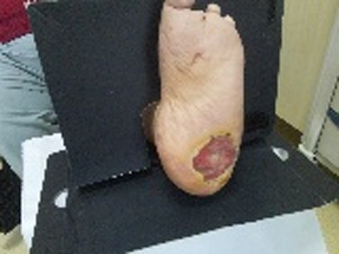
RGB (Pi Camera)
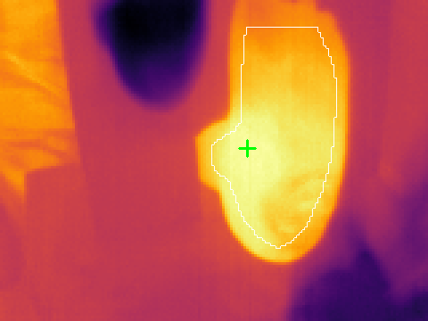
Thermal (Lepton 3.5): white outline = area of the sole measured, green + = warmest spot (5 × 5 pixel average)
Grade given by the dataset's experts
Grade 2
Model output
class_2 (the class trained on grade 2 pictures), confidence 92 %
Sole average temperature
40.3 °C
Warm spot
1.8 °C above the sole average (42.1 °C)
class_00 %
class_17 %
class_292 %
Reading: The model matched the dataset grade (2) and was sure. The sole has a mild warm area, 1.8 °C above its average.
File 2024-07-25_21-18-50pic_cam.jpg · test group public_v1-g00335
What the results show
Grade 2 is recognised best (42 of 68). It has the most pictures and patient groups.
Grade 0 was not recognised (0 of 16). The dataset has only 5 grade 0 capture sessions, so
in each fold the model learns grade 0 from about 4 feet. That is too few, and it is the main reason the team's own
clinician-graded data is needed.
Grade 1 is often confused with 0 and 2. It sits between them and the visible differences are small.
Thermal pictures show where the foot is warmest. Temperatures are read from the dataset's raw Lepton values
as centikelvin; that reading was not checked against a reference thermometer. Only the inside of the sole is
measured: the outline edge, the frame border and the leg or ankle running out of the picture are left out, and the
warmest spot is a small-area average, not one pixel. Thermal frames that did not read as skin temperature were
refused, never corrected, and the samples were taken only from frames that passed. That choice looks at the thermal
frame only, never at the model's answer.
The 2.2 °C left-right check is not shown here. These pictures show one foot at a time. The station
photographs both soles together and compares them region by region.
These are honest numbers. The paper reports 93 % with a split that can put frames of the same foot on both
sides. Here every test picture comes from patient groups the model never saw.
Images: Mermer G., Aksu M. F., Ozsezer G., Cetinkalp S., Er O., Gullu M. K., Multimodal Deep
Learning for Diabetic Foot Ulcer Staging Using Integrated RGB and Thermal Imaging, arXiv 2603.26952 (2026);
github.com/faksu267/Multimodal-Diabetic-Foot-Ulcer-Classification. Shown for academic reference, with citation. The
dataset has no stated licence and permission has been requested; these pictures will be removed if the authors ask.
The model will be retrained on the research team's own clinician-graded data.